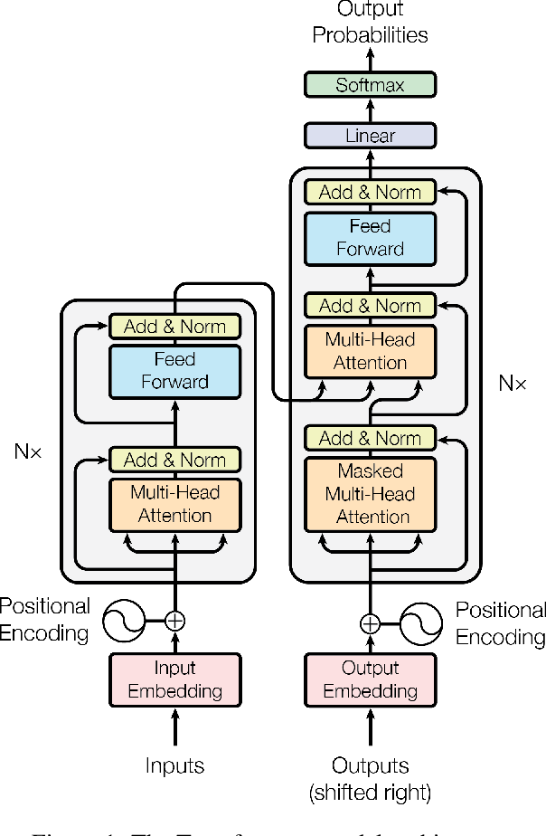

Self-Attention Mechanism
Tworzymy dla każdego tokenu w sekwencji wejściowej (embeddingu) tworzymy trzy wektory: Q (Query - zapytanie, określa na co ma patrzeć ten token), K (Key - klucz, odpowiadający na zapytanie, zawiera informacje dla innych tokenów), V(Value - warotść, zawiera faktyczną informację) . Dzieje się to poprzez pomnożenie embeddingu przez trzy różne macierze wag (składające się z parametrów, które są uczone przez sieć).
Załóżmy, że wybrany wektor Q danego elementu. Bierzemy dowolny wektor K i obliczamy iloczyn skalarny tych dwóch wektorów. Jeśli te dwa embeddingi są ze sobą związane (istotne dla siebie), wartość tego iloczynu skalarnego jest dużą (dodatnią!) liczbą, w przeciwnym razie jest mała (być może ujemna). Warto zobaczyć to w przestrzeni, jeśli mamy dwa wektory "podobnie skierowane", to kąt pomiędzy nimi jest niewielki, czyli cosinus jest duży (bliski 1). Wtedy iloczyn skalarny jest względnie duży.
Weźmy teraz całą macierz złożoną z wektorów Q, oraz macierz złożoną z wektorów K. Obie z nich mają wymiar liczba pozycji w sekwencji na wymiar wektorów Q i K (który jest taki sam). Dokonując transpozycji (zamieniamy wiersze z kolumnami) macierzy K zmieniamy jej wymiar na wymiar wektorów K na liczba pozycji w sekwencji. Możemy teraz dokonać pomnożenia tych dwóch macierzy - jedenej złożonej z wektorów Q i drugiej transponowanej macierzy złożonej z wektorów K (dokładnie w tej kolejności, mnożenie macierzy nie jest przemienne). W rezultacie otrzymujemy macierz kwadratową o wymiarze liczby pozycji w sekwencji. Otrzymany wynik dla stabilności numerycznej dzielimy przez pierwiastek z wymiaru Q, ponieważ będziemy zaraz aplikować funkcję softmax, która jeszcze "zawyża" duże wartości, a te mniejsze zmniejsza do 0.
WAŻNE! - w powyższym fragmencie pomijamy wymiar batch i wymiar ilości głów. Kiedy będziemy implementować to w kodzie, tworząc klasę "MultiHeadSelfAttention" będzie ona miała parametr n_heads - ilość głów. Metoda forward natomiast przyjmie wektor x o shape (B (batch_size), T (wymiar czasu, ilość tokenów w sekwencji wejściowej), C (wymiar wektora embeddingu)). Każdy pojedyńczy wektor Q, K, V będzie miał shape (B, n_heads, T, (C / n_heads)). I dopiero po pomnożeniu macierzy Q i K transponowane zmieni się na (B, n_heads, T, T).
Musimy pamiętać, że nasz mechanizm nie może "patrzeć w przód", ponieważ tam właśnie jest odpowiedź. Dlatego stosujemy maskę - macierz trójkątną dolną (oczywiście kwadratową) o wymiarze takim samym jak attention score. Na głównej przekątnej i poniżej tej przekątnej są zero, natomiast nad nią są minus nieskończoności. Dodajemy ją do macierzy attention score, dzięki czemu po wykonaniu funkcji softmax wartości będące nad główną przekątną wyzerują się, więc nie będą miały znaczenia w procesie (minus nieskończoność się zeruje po softmax).
Teraz aplikujemy softmax, wiersz po wierszu. Dzięki temu w każdej kolumnie otrzymujemy znormalizowane liczby sumujące się do jedynki, czyli rozkład prawdopodobieństwa. Potem wreszcie mnożymy razy wektor Value.
WAŻNE! - shape po pomnożeniu przez Value w naszej implementacji wyniesie (B, T, C), tyle samo co wejściowym. Tak właśnie działa pojedyńcza self-attention head (my od razu tworzymy klasę MultiHeadSelfAttention), ale moc tego procesu tkwi w tym, że moża pracować kilka głów jednocześnie.

Spójrzmy teraz na powyższy schemat. Składa się on z dwóch głównych części - encodera (lewo) i decodera (prawo) . Obie te części są powtarzane n-razy. Mając surowe dane tworzymy z nich embeddingi (wektory). Poza tym tworzymy wektory Positional Encoding, aby uwzględnić też pozycje tokenu w sekwencji.
Zajmijmy się teraz encoderem. Tutaj zaczynamy od bloku Multi-Head Attention, ale jeszcze przed tym blokiem mamy strzałkę, która jest połączona bezpośrednio z warstwą normalizacyjną. Jest to Residual Connection, ułatwiające uczenie się zmian względem wejścia. Po pierwszej normalizacji mamy niewielką sieć typu feed-forward złożoną z dwóch przekształceń liniowych i funkcji aktywacyjnej Relu pomiędzy nimi, ważną dla uczenia się bardziej złożonych reprezentacji.
Decoder też ma na początku mechanizm multi-head attetnion, ale tym razem aplikujemy maskę. Ponownie mamy "Residual Connection" i warstwę normalizacyjną. Dzieje się to dwa razy, potem sieć FF, kolejna normalizacja, przekształcenie liniowe i softmax wrzuca prawdobieństwa. Uwagę może zwrócić połączenie pomiędzy encoderem i decoderem. Jest to połączenie cross-attention, którego nie implementujemy w naszym modelu - dla uproszczenia zajmiemy się tylko decoderem.